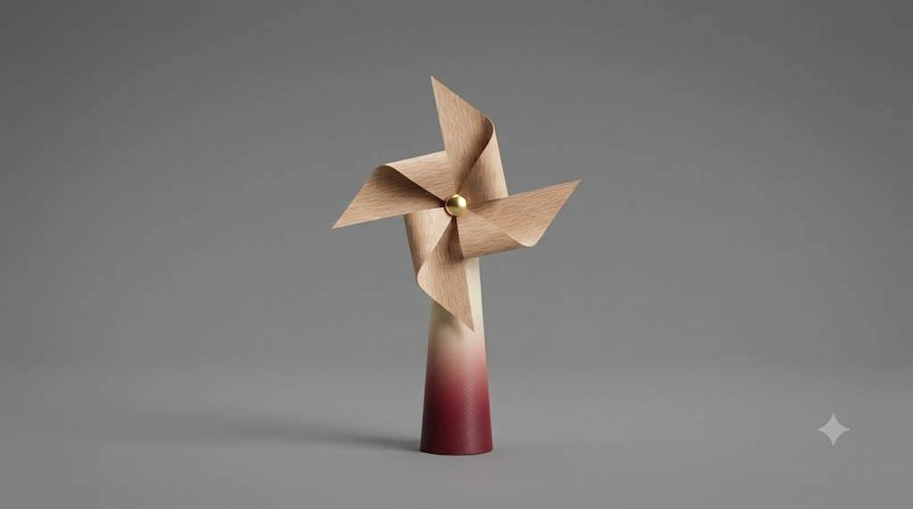

01
WINDROSES
Transmettre une pensée à distance par le souffle. Une interaction poétique et éphémère, sans écran ni bouton.

Transmettre une pensée à distance par le souffle. Une interaction poétique et éphémère, sans écran ni bouton.
